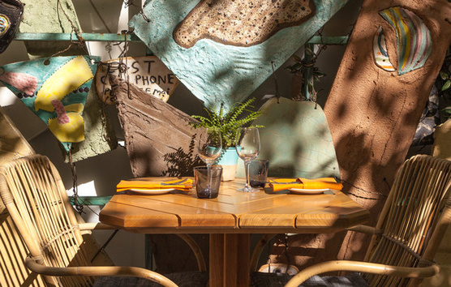

Lantern NYC

We're Lantern NYC and we're changing the world - one delicious meal at a time.
We were inspired to open Lantern after spending years entertaining our clients at local bars and restaurants. We realized that all the money that our companies spend on client entertainment could also be used to serve underserved communities in Haiti, South Africa and India.
As typical New Yorkers, we are also passionate about delicious yet healthy food. Lantern will have an emphasis on local, organic and plant-based foods. To make our dream a reality, we are partnering with Craig Cochran, co-owner of the beloved Terri restaurant in NYC, and helped found Blossom and Candle 79.
246 West 48th Street, New York, NY 10036